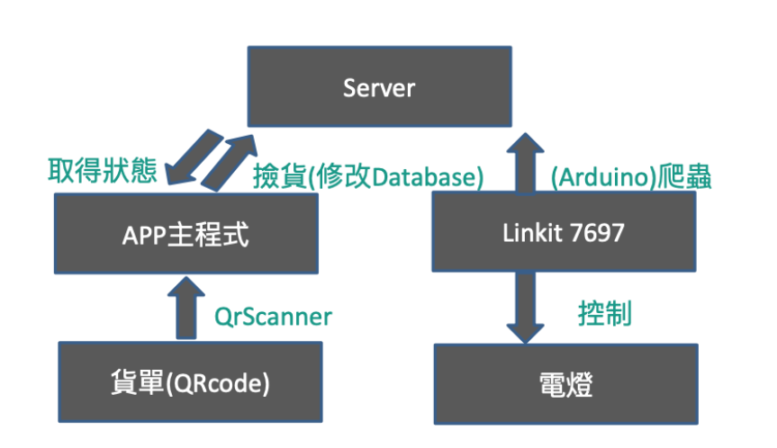

系統原理與設計
本次專題分為軟體層面及硬體層面，軟體層分為前端與後端，前端我們使用了Xamarin去製作美工，後端則用了Swagger來做資料的儲存與更改。而硬體的方面用了Arduino與電路串接的方式來連接軟硬體及控制燈泡的開啟與關閉。使用時的流程是手機開啟APP後，按下”撿貨”按鈕，掃描本次訂單的QRcode，再經由QRScanner到撿貨的頁面，在這邊可以知道此次撿貨內容與得到的顏色。然後藉由硬體的Linkit7697連接Arduino到Server端爬蟲後，再控制相應位置和顏色的燈泡亮起。使用者根據提示將商品完成撿貨後會把資料傳到Server端修改資料庫，再將修改完的資料回傳到使用者介面，同時Linkit7697控制燈泡熄滅。上面是簡單的流程圖。